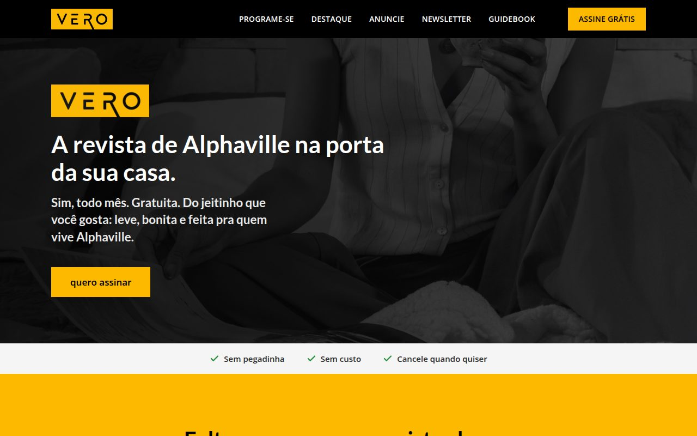
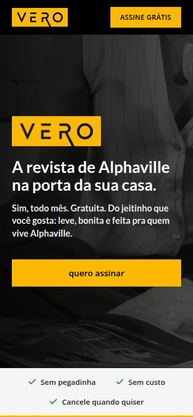
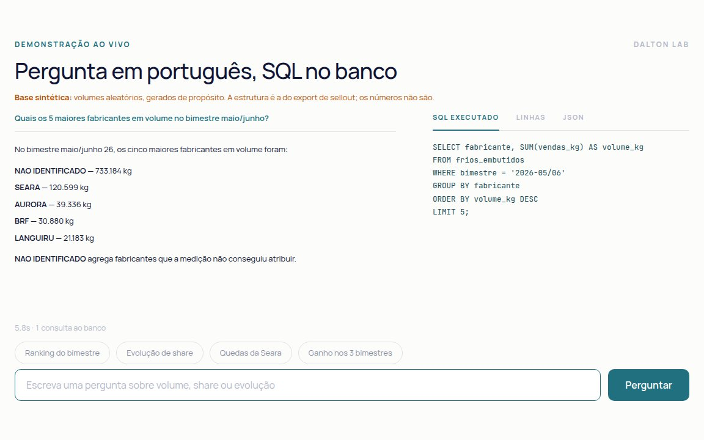
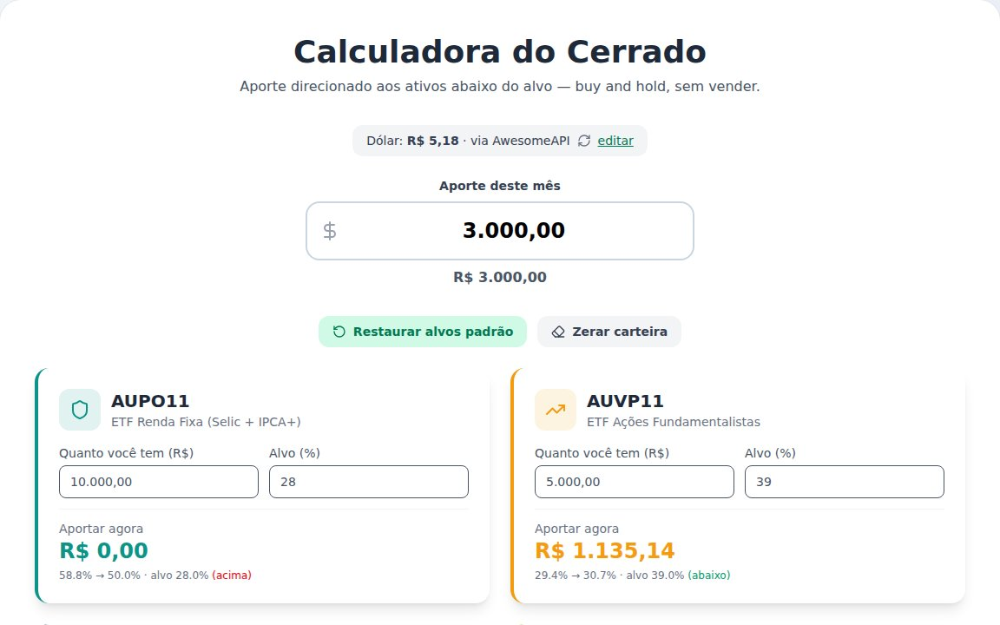

VERO: página de assinatura e painel do time
Cliente, em produção
Astro · Next.js · TypeScript · Supabase


A VERO tinha a página de assinatura em WordPress. Era lenta, e o time precisava de terceiros para cadastrar condomínio ou saber quantos assinantes tinha. Fiz o escopo com eles, fechei o contrato e entreguei duas peças.
A primeira é a página de assinatura nova, em Astro estático, porque o que eles pediram primeiro foi velocidade. O formulário tem etapas, valida CPF e trava o envio duplicado. Essa trava entrou depois de um smoke test em produção mostrar que dois cliques podiam gerar dois cadastros.
A segunda é um admin em Next.js. Nele o time busca e edita assinantes, cadastra condomínios e acompanha os números por período. Na v1 o admin não apaga nada, só cria e edita, porque o time é pequeno e perder dado custaria mais do que ter um botão a menos. O banco só é acessado pelo servidor, e o reset do banco de teste se recusa a rodar fora da máquina local.
Também migrei os dados para contas da própria VERO. Hoje o time consulta, edita e exporta os contatos pelo painel, sem me chamar.
Tempo até a página ficar utilizável
Lighthouse, celular em 4G, medido na proposta
Do lado do WordPress está a home, que continua no ar, porque a página antiga de assinatura já redireciona para a nova. Rode os testes para ver o número de hoje.
Ou veja as duas carregando aqui, lado a lado. O tempo é o da sua conexão, então no wi-fi a diferença fica menor que no 4G.
Conversando com o dado
Apresentação com agente ao vivo
n8n · LLM · SQL · JavaScript

Uma apresentação que fiz para mostrar a gente de negócio o que acontece quando um agente de IA consulta uma base de dados. A tela 4 tem um agente funcionando: você pergunta em português, ele gera o SQL, o banco executa, e ao lado aparecem a consulta, as linhas e o payload da requisição.
Coloquei esse painel porque a pergunta que sempre aparece é "de onde veio esse número?". A estrutura da base copia um export real de sellout. Os volumes são aleatórios.
- EntradaPergunta em português
- SaídaResposta, SQL, linhas e payload
- Tempo de resposta7 a 12 s
- DadosSintéticos, estrutura real
Calculadora do Cerrado
Produto pessoal, no ar
React · Vite · Vitest · Playwright

Uso para decidir onde colocar o aporte do mês numa carteira com alvo por ativo, sem vender nada. Informo quanto tenho em cada ativo e o valor do aporte, e ela divide o dinheiro entre os ativos que estão abaixo do alvo. Um dos ativos é em dólar e usa cotação ao vivo.
A conta fica numa função pura, separada da tela e da conversão de moeda. Depois de pronta, revisei a interface pelas heurísticas de Nielsen e corrigi o que apareceu. O caso mais sério: digitar "10.000" virava 1.
- ArredondamentoMaior resto, fecha no centavo
- Cotação do dólarAwesomeAPI, com ajuste manual
- Testes51
- DeployGitHub Pages, só com testes verdes
Outros
audio-transcript
Transcreve áudios longos com um modelo da NVIDIA rodando na própria máquina, sem custo por minuto. Python, FastAPI, Docker.
CódigoAutomações
Fluxos em n8n, integrações por API e agentes de atendimento para clientes.
Como eu trabalho
Uso o Claude Code no dia a dia com um processo que montei para mim. Antes de codar, escrevo em cinco linhas o objetivo, o que entra, o que fica de fora, o caso que dá certo e o caso que dá errado. Depois vêm testes na lógica que importa, revisão da interface no navegador, revisão de segurança do diff e uma rodada de QA antes de entregar.